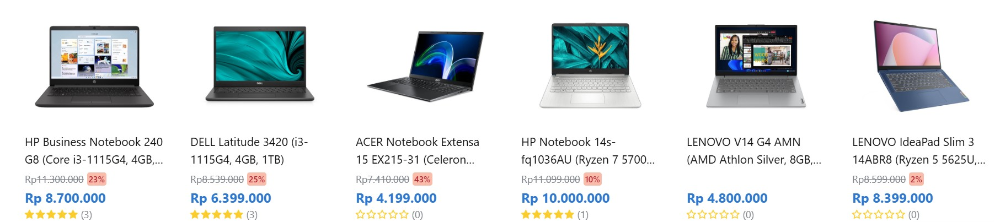
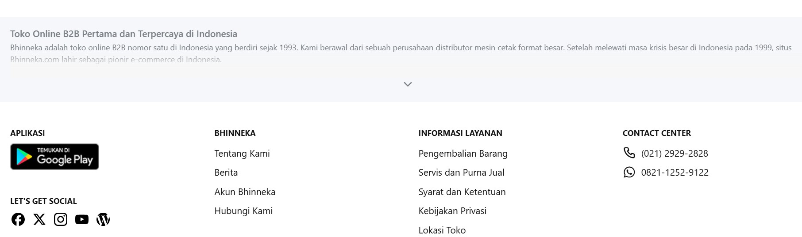

Menyajikan data menjadi informasi
Belajar bagaimana menyajikan data menjadi informasi berbasis Web, dengan Web statis Programming dari dasar dengan HTML CSS
Pada pmbelajaran ini siswa belajar dengan langsung membuat project E-Marketplace sesuai tema masing-masing Pada pmbelajaran ini siswa belajar dengan langsung membuat project E-Marketplace sesuai tema masing-masing Pada pmbelajaran ini siswa belajar dengan langsung membuat project E-Marketplace sesuai tema masing-masing Pada pmbelajaran ini siswa belajar dengan langsung membuat project E-Marketplace sesuai tema masing-masing Pada pmbelajaran ini siswa belajar dengan langsung membuat project E-Marketplace sesuai tema masing-masing Pada pmbelajaran ini siswa belajar dengan langsung membuat project E-Marketplace sesuai tema masing-masing

